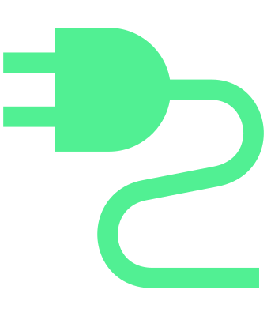

Possibilités de recharge avec courant continu (DC) :
Borne de recharge publique
La station de recharge (Wallbox) qui permet la recharge en courant continu (CC)

Lors de la recharge, une puissance de charge plus élevée est obtenue. Le temps de recharge est considérablement réduit.
Ouvrir la trappe de recharge de la batterie et retirer le capuchon de protection de la prise de recharge (CC)
Déverrouillez le véhicule et appuyez sur la trappe de charge de la batterie.
Ouvrir la trappe de recharge de la batterie.
L’indicateur du processus de recharge situé sur la prise de recharge clignote en vert.
Retirer le capuchon de protection inférieur de la prise de recharge (CC).
Placer le capuchon de protection inférieur de la prise de charge (DC) sur la trappe de chargement de la batterie.
Brancher le câble de recharge
Insérer la fiche du câble de charge dans la prise de charge.
Vérifier que la prise de charge femelle est insérée à fond dans la prise de charge mâle.
La prise de charge femelle est automatiquement verrouillée dans la prise de charge mâle. L’indicateur du processus de recharge situé sur la prise de recharge clignote en blanc.
Démarrer la recharge
La recharge commence automatiquement après le branchement du câble de recharge.
ou :
Si nécessaire, démarrer le processus de recharge sur la station de recharge.
L’indicateur du processus de recharge situé sur la prise de recharge clignote rapidement en vert. Le temps de recharge restant s’affiche à l’écran du combiné d’instruments et clignote 
Fin automatique du processus de recharge
Une fois la limite supérieure de la batterie atteinte, le processus de recharge s’arrête automatiquement. La fiche de charge est déverrouillée de la prise de charge et peut être retirée.
Arrêt manuel du processus de charge
Suivre les instructions de la borne de recharge.
Une fois le processus de charge terminé, la fiche de charge est automatiquement déverrouillée. L'indicateur de charge dans la prise de recharge s'allume en vert.
ou :
Appuyer sur le bouton de fonction pour terminer le processus de recharge dans le menu de réglage du processus de charge dans l’infodivertissement Régler le processus de recharge.
Le processus de recharge est terminé. La prise de charge femelle est automatiquement déverrouillée dans la prise de charge mâle.
Pour relancer le processus de recharge, la fiche de recharge doit être retirée et le processus de recharge doit être lancé depuis le début.
Après la recharge
Si la fiche de recharge reste verrouillée dans la prise de charge, elle peut être déverrouillée avec le bouton
 sur la clé.
sur la clé.Débrancher la fiche de recharge de la prise de recharge.
Remettre en place le capuchon de la prise de charge.
Fermer la trappe de recharge de la batterie.